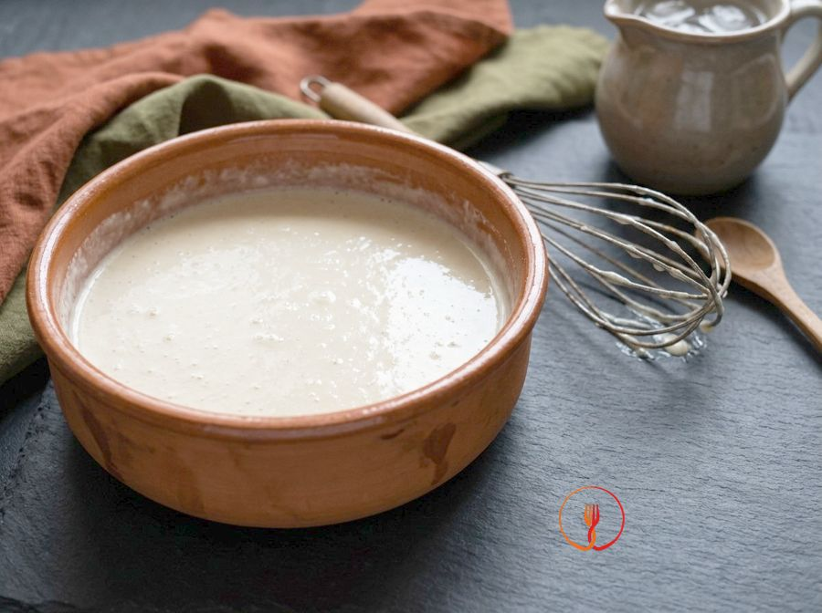

Batter for frying
Ingredients
- 00 flour150 gr
- rice flour100 gr
- ice-cold sparkling water250 ml
- salt1 pinch
- ice cubes (optional)5
Allergens
Gluten
May contain traces of: Mustard, Soy.
Method
- Put the sparkling water in the refrigerator until it becomes very cold.
- Pour the two flours into a large bowl and add the salt.
- Gradually add the ice-cold water, mixing briefly with a fork.
- Do not overwork the batter: it must remain slightly irregular.
- If necessary, place the bowl inside a larger container containing ice to keep it cold.
- Thoroughly dry the ingredients to be fried, such as zucchini, carrots, onions, or fish.
- Dip the foods into the batter and fry in oil at 170–180 °C until a crispy surface is achieved.
- Drain on a rack or paper towels and serve immediately.
Chef's tips
Tips, mistakes, and alternatives:
- Cold batter promotes a lighter and crispier fry.
- Do not prepare it too far in advance.
- Do not overcrowd the fryer or pan: the oil temperature might drop.
- You can use only 00 flour, but rice flour helps achieve a different kind of crispiness.
- This preparation is not the same as leavened batter for fritters.
Nutrition facts (estimate)
| Per serving (138 g) | Per 100 g | |
|---|---|---|
| Energy | 910 kJ / 218 kcal | 659 kJ / 158 kcal |
| Protein | 5.2 g | 3.8 g |
| Carbohydrates | 47 g | 34 g |
| of which sugars | 0.6 g | 0.4 g |
| Fat | 0.5 g | 0.4 g |
| of which saturates | 0.1 g | 0.1 g |
| Fibre | 1.2 g | 0.9 g |
| Salt | 0.5 g | 0.4 g |
AI estimates based on average CREA / USDA data: indicative only, not a substitute for medical or dietitian advice.
Open the recipe in the app for the shopping list, ingredient sheets and nearby shops.